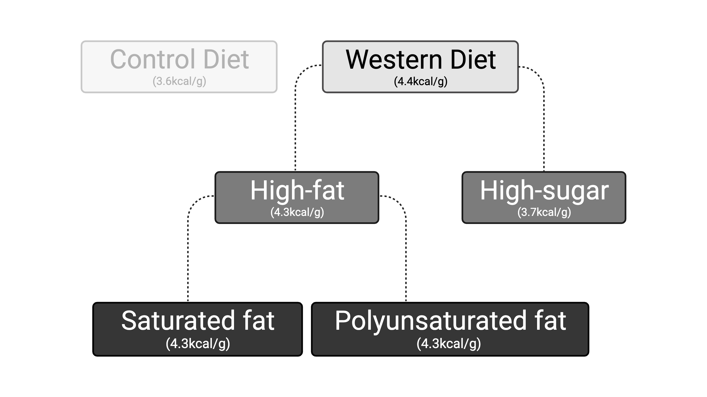
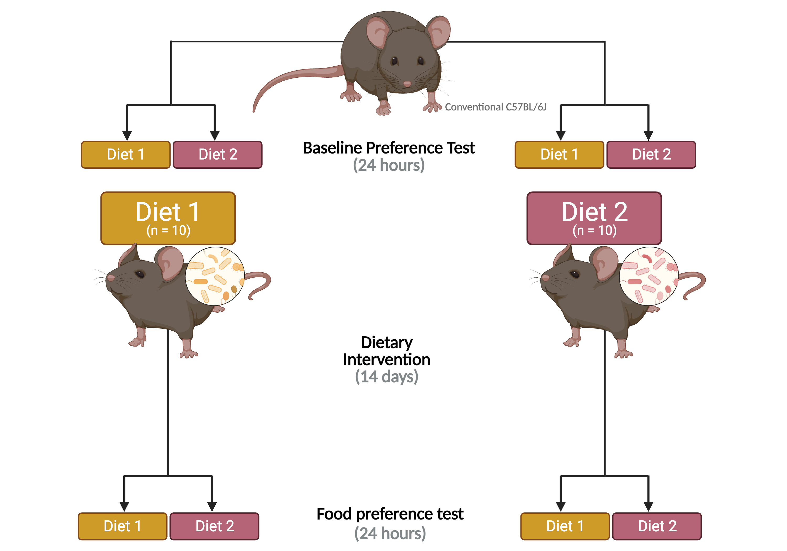
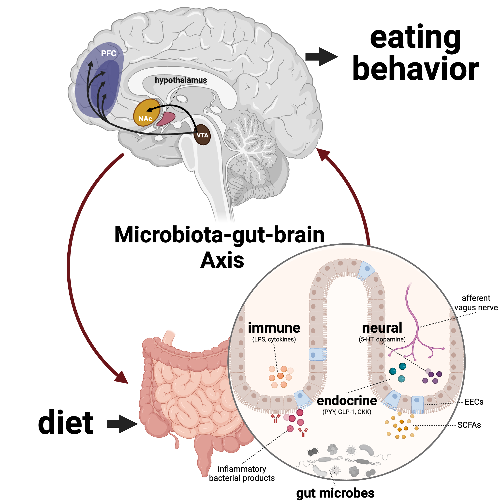

Abstract
Human eating behavior is governed by the homeostatic (eating for metabolic needs) and hedonic (eating for pleasure) systems, two distinct but overlapping circuits that have evolutionary basis in motivating human appetite. Industrialization of dietary composition tilts the balance away from homeostatic towards hedonic eating, resulting in the rise of pathological eating behaviors. Research over two decades has linked diet, brain chemistry, and behavior, revealing the addictive nature of sugar and certain foods, and recent studies have highlighted the role of the microbiota-gut-brain axis in this dynamic, but the specific elements of an industrialized diet that drive pathological eating behaviors have yet to be identified. Collaborating with the Carmody Lab, this study aims to investigate the effect of the industrialization of dietary composition on downstream food preference via the microbiota-gut-brain axis.
Components of an industrialized diet
 Created with BioRender.com
Experimental Design
 Created with BioRender.com
Proposed hypothesis
 Created with BioRender.com